Background背景背景背景ContexteHintergrund
Interactive Prototype is a set of three projects from one course. Each one makes an invisible signal visible, and together they lead to a touch drum kit that anyone can play by tapping.
交互原型是同一门课里的三个项目。每个项目都让一种看不见的信号变得可见，三者最后汇成一台触摸鼓机，谁都可以轻敲来演奏。
互動原型是同一門課裡的三個專案。每個專案都讓一種看不見的訊號變得可見，三者最後匯成一台觸控鼓機，誰都可以輕敲來演奏。
インタラクティブプロトタイプは、ひとつの授業で取り組んだ 3 つのプロジェクトです。それぞれが目に見えない信号を見えるようにし、最後は誰でも叩いて演奏できるタッチ式のドラムキットにつながります。
Prototype interactif réunit trois projets d’un même cours. Chacun rend visible un signal invisible, et ensemble ils mènent à une batterie tactile que tout le monde peut jouer du bout des doigts.
Interaktiver Prototyp umfasst drei Projekte aus einem Kurs. Jedes macht ein unsichtbares Signal sichtbar, und zusammen führen sie zu einem Touch-Drumkit, das jeder durch Tippen spielen kann.
Everyday electronics hide the signals that make them work日常电子产品把让它们运转的信号藏了起来日常電子產品把讓它們運作的訊號藏了起來身の回りの電子機器は、動きを生む信号を隠しているLes objets électroniques du quotidien cachent les signaux qui les font fonctionnerAlltagselektronik versteckt die Signale, die sie antreiben
Physical computing is part of daily life, yet clean cases hide the wires and circuit boards inside, so how it works stays a mystery to most people. Sound is often undervalued in digital media, where sight has long come first. The course DESN 22848, Interaction Design: Media, Motion and the Body, asked for the opposite: show current, sound and touch openly and use them as material for interaction.
实体计算早已是日常的一部分，但整洁的外壳把里面的电线和电路板都藏了起来，大多数人看不懂它是怎么工作的。在数字媒体里，声音也常被低估，视觉一直排在前面。DESN 22848《交互设计：媒介、运动与身体》这门课反其道而行：把电流、声音和触摸公开地展示出来，当作交互的材料。
實體運算早已是日常的一部分，但整潔的外殼把裡面的電線和電路板都藏了起來，大多數人看不懂它是怎麼運作的。在數位媒體裡，聲音也常被低估，視覺一直排在前面。DESN 22848《互動設計：媒介、運動與身體》這門課反其道而行：把電流、聲音和觸摸公開地展示出來，當作互動的材料。
フィジカルコンピューティングは日常の一部になりましたが、すっきりした筐体が中の配線や基板を隠すので、多くの人にとって仕組みは謎のままです。デジタルメディアでは音も軽く扱われがちで、長く視覚が優先されてきました。DESN 22848「インタラクションデザイン：メディア、モーション、身体」の授業は逆の道を求めました。電流、音、タッチを隠さずに見せ、インタラクションの素材として使うことです。
L’informatique physique fait partie du quotidien, mais des boîtiers soignés cachent les fils et les circuits, si bien que son fonctionnement reste un mystère pour la plupart des gens. Le son est souvent sous-estimé dans les médias numériques, où la vue passe en premier depuis longtemps. Le cours DESN 22848, Interaction Design: Media, Motion and the Body, demandait l’inverse : montrer ouvertement le courant, le son et le toucher, et s’en servir comme matière d’interaction.
Physical Computing gehört längst zum Alltag, doch saubere Gehäuse verbergen Kabel und Platinen, sodass die Funktionsweise für die meisten ein Rätsel bleibt. Auch Klang wird in digitalen Medien oft unterschätzt, dort steht seit Langem das Sehen an erster Stelle. Der Kurs DESN 22848, Interaction Design: Media, Motion and the Body, verlangte das Gegenteil: Strom, Klang und Berührung offen zeigen und als Material für Interaktion nutzen.
Three modules, three senses: connect, hear, touch三个模块，三种感官：连接、聆听、触摸三個模組，三種感官：連接、聆聽、觸摸3 つのモジュール、3 つの感覚：つなぐ、聴く、触れるTrois modules, trois sens : connecter, entendre, toucherDrei Module, drei Sinne: verbinden, hören, berühren
- Connect连接連接つなぐConnecterVerbindenModule 1, weeks 1 to 5. Low-voltage circuits from copper tape, LED stickers and coin batteries, ending in one wearable and one non-wearable design.模块 1，第 1 到 5 周。用铜箔胶带、LED 贴片和纽扣电池做低压电路，最后完成一个可穿戴设计和一个不可穿戴设计。模組 1，第 1 到 5 週。用銅箔膠帶、LED 貼片和鈕扣電池做低壓電路，最後完成一個可穿戴設計和一個不可穿戴設計。モジュール 1、第 1 から 5 週。銅テープ、LED ステッカー、コイン電池で低電圧の回路をつくり、ウェアラブルと非ウェアラブルのデザインを 1 つずつ仕上げる。Module 1, semaines 1 à 5. Des circuits basse tension en ruban de cuivre, LED autocollantes et piles bouton, jusqu’à un design portable et un design non portable.Modul 1, Wochen 1 bis 5. Niedervolt-Schaltungen aus Kupferband, LED-Stickern und Knopfzellen, am Ende ein tragbarer und ein nicht tragbarer Entwurf.
- Hear聆听聆聽聴くEntendreHörenModule 2, weeks 5 to 9. Recorded sound drives p5.js visuals, ending in an interactive header for a portfolio site.模块 2，第 5 到 9 周。用录下的声音驱动 p5.js 视觉，最后做成作品集网站的交互式头图。模組 2，第 5 到 9 週。用錄下的聲音驅動 p5.js 視覺，最後做成作品集網站的互動式頁首。モジュール 2、第 5 から 9 週。録音した音で p5.js の映像を動かし、ポートフォリオサイトのインタラクティブなヘッダーに仕上げる。Module 2, semaines 5 à 9. Des sons enregistrés pilotent des visuels p5.js, jusqu’à un en-tête interactif pour un site de portfolio.Modul 2, Wochen 5 bis 9. Aufgenommene Klänge steuern p5.js-Visuals, am Ende ein interaktiver Header für eine Portfolio-Website.
- Touch触摸觸摸触れるToucherBerührenModule 3, weeks 9 to 13. Makey Makey and p5.js join physical touch to WebGL visuals, ending in one integrated design.模块 3，第 9 到 13 周。用 Makey Makey 和 p5.js 把实体触摸接到 WebGL 视觉上，最后完成一个整合的设计。模組 3，第 9 到 13 週。用 Makey Makey 和 p5.js 把實體觸摸接到 WebGL 視覺上，最後完成一個整合的設計。モジュール 3、第 9 から 13 週。Makey Makey と p5.js で実際のタッチを WebGL の映像につなぎ、ひとつの統合されたデザインに仕上げる。Module 3, semaines 9 à 13. Makey Makey et p5.js relient le toucher physique à des visuels WebGL, jusqu’à un design intégré.Modul 3, Wochen 9 bis 13. Makey Makey und p5.js verbinden echte Berührung mit WebGL-Visuals, am Ende ein integrierter Entwurf.
Each design has a clear user, from a night cyclist to someone tapping out a beat每个设计都有明确的使用者，从夜骑的人到敲出节奏的人每個設計都有明確的使用者，從夜騎的人到敲出節奏的人どのデザインにも、夜道を走る自転車乗りからリズムを刻む人まで、はっきりした使い手がいるChaque design vise un public précis, du cycliste de nuit à la personne qui tape un rythmeJeder Entwurf hat klare Nutzer, von der Radfahrerin bei Nacht bis zu jemandem, der einen Beat tippt
The helmet is for cyclists riding at night. The phone holder is for people who want to cut screen time without relying on willpower. Rainbow Bloom is for visitors landing on a portfolio site, who decide quickly whether to stay. The drum kit is for anyone who wants a playful, accessible way to make music by touch.
头盔面向夜间骑车的人。手机支架面向想减少屏幕时间、又不想全靠意志力的人。Rainbow Bloom 面向打开作品集网站的访客，他们很快就会决定要不要留下。鼓机面向所有想用触摸来玩音乐的人，轻松好玩，人人都能上手。
安全帽面向夜間騎車的人。手機支架面向想減少螢幕時間、又不想全靠意志力的人。Rainbow Bloom 面向打開作品集網站的訪客，他們很快就會決定要不要留下。鼓機面向所有想用觸摸來玩音樂的人，輕鬆好玩，人人都能上手。
ヘルメットは夜に自転車に乗る人のため。スマホスタンドは、意志の力に頼らずに画面を見る時間を減らしたい人のため。Rainbow Bloom は、ポートフォリオサイトを訪れ、残るかどうかをすぐに決める人のため。ドラムキットは、タッチで気軽に楽しく音楽をつくりたいすべての人のためのものです。
Le casque s’adresse aux cyclistes qui roulent de nuit. Le support de téléphone vise les personnes qui veulent réduire leur temps d’écran sans compter sur leur volonté. Rainbow Bloom s’adresse aux visiteurs d’un portfolio, qui décident vite s’ils restent. La batterie est pour toute personne qui veut faire de la musique au toucher, de façon ludique et accessible.
Der Helm ist für Menschen, die nachts Rad fahren. Der Handyhalter ist für alle, die ihre Bildschirmzeit senken wollen, ohne sich auf Willenskraft zu verlassen. Rainbow Bloom ist für Besucher einer Portfolio-Website, die schnell entscheiden, ob sie bleiben. Das Drumkit ist für alle, die spielerisch und zugänglich per Berührung Musik machen wollen.
The ideas came from night cycling, portfolio visits and drum pads灵感来自夜间骑行、作品集浏览和鼓垫靈感來自夜間騎行、作品集瀏覽和鼓墊発想の元は、夜のサイクリング、ポートフォリオの閲覧、ドラムパッドLes idées sont nées du vélo de nuit, des visites de portfolios et des pads de batterieDie Ideen kamen vom Radfahren bei Nacht, von Portfolio-Besuchen und von Drum-Pads
Module 1 started from the idea that conductive wires built into wearable items could do more than look good: they could make a cyclist easier to see at night. Module 2 asked how a header could make one portfolio stand out among many. The drum kit was inspired by professional capacitive drum pads and by the Makey Makey experiments earlier in Module 3.
模块 1 的出发点是：织进可穿戴物品里的导电线除了好看，还能让骑车的人在夜里更容易被看见。模块 2 思考的是，一个头图怎样让作品集在众多网站中脱颖而出。鼓机的灵感来自专业的电容式鼓垫，以及模块 3 前期的 Makey Makey 实验。
模組 1 的出發點是：織進可穿戴物品裡的導電線除了好看，還能讓騎車的人在夜裡更容易被看見。模組 2 思考的是，一個頁首怎樣讓作品集在眾多網站中脫穎而出。鼓機的靈感來自專業的電容式鼓墊，以及模組 3 前期的 Makey Makey 實驗。
モジュール 1 の出発点は、身につけるものに導電線を組み込めば、見た目のよさに加えて、夜に自転車乗りを見えやすくできるという考えでした。モジュール 2 では、たくさんのポートフォリオの中でヘッダーがどう目を引けるかを考えました。ドラムキットは、プロ向けの静電容量式ドラムパッドと、モジュール 3 前半の Makey Makey の実験から着想しています。
Le module 1 est parti d’une idée : des fils conducteurs intégrés à un objet porté peuvent faire plus que décorer, ils peuvent rendre un cycliste plus visible la nuit. Le module 2 se demandait comment un en-tête peut faire ressortir un portfolio parmi tant d’autres. La batterie s’inspire des pads capacitifs professionnels et des expériences Makey Makey du début du module 3.
Modul 1 begann mit der Idee, dass leitfähige Drähte in tragbaren Dingen mehr können als gut aussehen: Sie machen Radfahrende nachts besser sichtbar. Modul 2 fragte, wie ein Header ein Portfolio unter vielen hervorheben kann. Das Drumkit ist inspiriert von professionellen kapazitiven Drum-Pads und den Makey-Makey-Experimenten zu Beginn von Modul 3.
The intended experience: an everyday action gets an instant answer期望的体验：一个日常动作，立刻得到回应期望的體驗：一個日常動作，立刻得到回應目指す体験：いつもの動作に、すぐ応えが返ってくるL’expérience visée : un geste du quotidien reçoit une réponse immédiateDas angestrebte Erlebnis: Eine alltägliche Handlung bekommt sofort eine Antwort
None of the designs needs a separate on switch. Fastening the helmet buckle turns on the headlight. Setting the phone in its holder turns on a red light. On the Rainbow Bloom header, sound draws colour and shape at once, summed up in its own line: “What you hear is what you see.” On the drum kit, a tap on a copper pad plays a drum and turns the sphere on screen to that pad’s colour.
这些设计都不需要单独的开关。扣上头盔卡扣，头灯就亮。把手机放进支架，红灯就亮。在 Rainbow Bloom 头图上，声音立刻画出颜色和形状，用它自己的一句话概括就是：“What you hear is what you see（听到什么，就看到什么）。”在鼓机上，轻敲一块铜箔垫，鼓声响起，屏幕上的球体变成这块垫子的颜色。
這些設計都不需要單獨的開關。扣上安全帽卡扣，頭燈就亮。把手機放進支架，紅燈就亮。在 Rainbow Bloom 頁首上，聲音立刻畫出顏色和形狀，用它自己的一句話概括就是：「What you hear is what you see（聽到什麼，就看到什麼）。」在鼓機上，輕敲一塊銅箔墊，鼓聲響起，螢幕上的球體變成這塊墊子的顏色。
どのデザインにも、別のオンスイッチはいりません。ヘルメットのバックルを留めるとヘッドライトが点きます。スマートフォンをスタンドに置くと赤いライトが点きます。Rainbow Bloom のヘッダーでは、音がすぐに色と形を描きます。ページ自身の言葉では「What you hear is what you see（聴こえるものが見えるもの）」です。ドラムキットでは、銅箔パッドを叩くとドラムが鳴り、画面の球体がそのパッドの色に変わります。
Aucun design n’a besoin d’un interrupteur séparé. Attacher la boucle du casque allume le phare. Poser le téléphone sur son support allume une lumière rouge. Sur l’en-tête Rainbow Bloom, le son dessine aussitôt couleurs et formes, résumé par sa propre phrase : « What you hear is what you see » (ce qu’on entend, on le voit). Sur la batterie, une frappe sur un pad en cuivre joue un son et donne à la sphère à l’écran la couleur de ce pad.
Keiner der Entwürfe braucht einen eigenen Einschalter. Wer die Helmschnalle schließt, schaltet das Frontlicht ein. Wer das Handy in den Halter stellt, schaltet ein rotes Licht ein. Auf dem Rainbow-Bloom-Header zeichnet Klang sofort Farbe und Form, zusammengefasst in seinem eigenen Satz: „What you hear is what you see“ (was man hört, sieht man). Auf dem Drumkit spielt ein Tippen auf ein Kupferpad einen Drum-Sound und färbt die Kugel auf dem Bildschirm in der Farbe dieses Pads.
Why it matters: interaction built on natural gestures asks less of people为什么重要：建立在自然动作上的交互，对人的要求更少為什麼重要：建立在自然動作上的互動，對人的要求更少なぜ大切か：自然な動作にもとづくインタラクションは、人に求めるものが少ないPourquoi c’est important : une interaction fondée sur des gestes naturels demande moins d’effortWarum das zählt: Interaktion, die auf natürlichen Gesten beruht, verlangt weniger von Menschen
Each design turns a gesture people already make into the input. The helmet light comes on without a button, so night safety does not depend on remembering it. The phone holder nudges habits through a cue in the room, with no hard limit. Rainbow Bloom aimed for clear, intuitive and inclusive interaction, and the drum kit makes music possible with a single tap.
每个设计都把人本来就会做的动作变成输入。头盔灯不用按钮就会亮，夜间安全不靠记性。手机支架用房间里的一个提示来引导习惯，没有硬性限制。Rainbow Bloom 追求清楚、直观、包容的交互，鼓机则让人轻轻一敲就能玩音乐。
每個設計都把人本來就會做的動作變成輸入。安全帽燈不用按鈕就會亮，夜間安全不靠記性。手機支架用房間裡的一個提示來引導習慣，沒有硬性限制。Rainbow Bloom 追求清楚、直觀、包容的互動，鼓機則讓人輕輕一敲就能玩音樂。
どのデザインも、人がもともとする動作を入力に変えます。ヘルメットのライトはボタンなしで点くので、夜の安全が覚えているかどうかに左右されません。スマホスタンドは、部屋の中の合図で習慣をそっと促し、強い制限はかけません。Rainbow Bloom は分かりやすく直感的で、誰にでも開かれたインタラクションを目指し、ドラムキットはひと叩きで音楽を始められるようにします。
Chaque design transforme en commande un geste que l’on fait déjà. Le phare du casque s’allume sans bouton : la sécurité de nuit ne dépend pas de la mémoire. Le support de téléphone oriente les habitudes par un signal dans la pièce, sans limite imposée. Rainbow Bloom visait une interaction claire, intuitive et inclusive, et la batterie permet de faire de la musique d’une seule frappe.
Jeder Entwurf macht eine Geste, die Menschen ohnehin ausführen, zur Eingabe. Das Helmlicht geht ohne Knopf an, Sicherheit bei Nacht hängt also nicht vom Erinnern ab. Der Handyhalter lenkt Gewohnheiten über ein Signal im Raum, ohne harte Grenze. Rainbow Bloom zielte auf klare, intuitive und inklusive Interaktion, und das Drumkit macht Musik mit einem einzigen Tippen möglich.
Why this form: visible circuits, a web page and a box anyone can tap为什么是这种形式：看得见的电路、一张网页和一个谁都能敲的盒子為什麼是這種形式：看得見的電路、一張網頁和一個誰都能敲的盒子なぜこの形か：見える回路、Web ページ、誰でも叩ける箱Pourquoi cette forme : des circuits visibles, une page web et une boîte que tout le monde peut frapperWarum diese Form: sichtbare Schaltungen, eine Webseite und ein Karton, auf den jeder tippen kann
The brief ruled out hiding the work inside a plastic case, so copper tape and wires stay on the surface and become part of the look. The sound work lives on a web page because a portfolio header meets every visitor in the browser. The drum kit is a cardboard box with five copper pads: cheap to build, easy to change between tests, and played like a drum pad, by tapping.
课程要求不把作品藏进塑料外壳，所以铜箔胶带和电线留在表面，成为外观的一部分。声音作品放在网页上，因为作品集的头图会在浏览器里迎接每一位访客。鼓机是一个贴着五块铜箔垫的纸盒：做起来便宜，测试之间也容易改，演奏方式和鼓垫一样，就是轻敲。
課程要求不把作品藏進塑膠外殼，所以銅箔膠帶和電線留在表面，成為外觀的一部分。聲音作品放在網頁上，因為作品集的頁首會在瀏覽器裡迎接每一位訪客。鼓機是一個貼著五塊銅箔墊的紙盒：做起來便宜，測試之間也容易改，演奏方式和鼓墊一樣，就是輕敲。
課題はプラスチックの筐体に作品を隠すことを禁じていたので、銅テープと配線は表面に残り、見た目の一部になっています。音の作品を Web ページにしたのは、ポートフォリオのヘッダーならブラウザですべての訪問者に届くからです。ドラムキットは銅箔パッドを 5 つ貼った段ボール箱で、安くつくれ、テストのたびに手直ししやすく、ドラムパッドと同じように叩いて演奏します。
Le brief excluait de cacher le travail dans un boîtier en plastique : ruban de cuivre et fils restent en surface et font partie de l’esthétique. Le travail sonore vit sur une page web, car un en-tête de portfolio accueille chaque visiteur dans le navigateur. La batterie est une boîte en carton avec cinq pads en cuivre : peu coûteuse, facile à modifier entre deux tests, et jouée comme un pad de batterie, en tapant.
Das Briefing schloss aus, die Arbeit in einem Plastikgehäuse zu verstecken, also bleiben Kupferband und Drähte an der Oberfläche und werden Teil der Gestaltung. Die Klangarbeit lebt auf einer Webseite, weil ein Portfolio-Header jeden Besucher im Browser empfängt. Das Drumkit ist ein Pappkarton mit fünf Kupferpads: günstig zu bauen, zwischen Tests leicht zu ändern und gespielt wie ein Drum-Pad, durch Tippen.
Research研究研究リサーチRechercheRecherche
Research covered lecture theory for each sense, a field study of everyday switches, and the tools that link touch, sound and screen.
研究包括三部分：每种感官对应的课堂理论、对日常开关的实地观察，以及把触摸、声音和屏幕连起来的工具。
研究包括三部分：每種感官對應的課堂理論、對日常開關的實地觀察，以及把觸摸、聲音和螢幕連起來的工具。
リサーチは、感覚ごとの講義の理論、身の回りのスイッチの観察、そしてタッチと音と画面をつなぐ道具の 3 つでした。
La recherche a porté sur la théorie des cours pour chaque sens, une observation des interrupteurs du quotidien et les outils qui relient toucher, son et écran.
Die Recherche umfasste die Theorie aus den Vorlesungen zu jedem Sinn, eine Feldstudie alltäglicher Schalter und die Werkzeuge, die Berührung, Klang und Bildschirm verbinden.
Lectures framed each module with one idea about the body每个模块的课程都围绕一个关于身体的观点展开每個模組的課程都圍繞一個關於身體的觀點展開講義は、モジュールごとに身体にかかわるひとつの考え方を軸にしていたLes cours ont cadré chaque module autour d’une idée sur le corpsDie Vorlesungen rahmten jedes Modul mit einer Idee über den Körper
- Affordance示能性示能性アフォーダンスAffordanceAffordanzGibson (1979) described affordances as action possibilities set by both body and environment. Gaver (1991) added sequential and nested affordances, and Norman’s The Design of Everyday Things added signifiers, mapping and feedback. Module 1 used these to turn fastening and placing into switches.Gibson（1979）把示能性描述为由身体和环境共同决定的行动可能。Gaver（1991）补充了顺序示能和嵌套示能，Norman 的《设计心理学》（The Design of Everyday Things）又加上了意符、映射和反馈。模块 1 用这些概念，把“扣上”和“放下”变成开关。Gibson（1979）把示能性描述為由身體和環境共同決定的行動可能。Gaver（1991）補充了順序示能和巢狀示能，Norman 的《設計的心理學》（The Design of Everyday Things）又加上了意符、映射和回饋。模組 1 用這些概念，把「扣上」和「放下」變成開關。Gibson（1979）はアフォーダンスを、身体と環境の両方が決める行為の可能性と説明しました。Gaver（1991）は連続的なアフォーダンスと入れ子のアフォーダンスを加え、Norman の『誰のためのデザイン？』（The Design of Everyday Things）はシグニファイア、マッピング、フィードバックを加えました。モジュール 1 はこれらを使い、「留める」「置く」をスイッチに変えました。Gibson (1979) décrit les affordances comme des possibilités d’action fixées à la fois par le corps et l’environnement. Gaver (1991) y ajoute les affordances séquentielles et imbriquées, et The Design of Everyday Things de Norman les signifiants, le mapping et le retour. Le module 1 s’en est servi pour faire d’« attacher » et de « poser » des interrupteurs.Gibson (1979) beschrieb Affordanzen als Handlungsmöglichkeiten, die Körper und Umgebung gemeinsam bestimmen. Gaver (1991) ergänzte sequenzielle und verschachtelte Affordanzen, Normans The Design of Everyday Things ergänzte Signifier, Mapping und Feedback. Modul 1 machte damit Schließen und Abstellen zu Schaltern.
- Sound and feeling声音与感受聲音與感受音と感情Son et émotionKlang und GefühlJulian Treasure’s talk on the four ways sound affects people, and John Cage’s line that “the material of music is sound and silence”, framed sound as a design material. Module 2 aimed to nudge visitors to play and make sound.Julian Treasure 关于声音影响人的四种方式的演讲，以及 John Cage 的那句“音乐的材料是声音和寂静”，都把声音当作设计材料。模块 2 的目标是引导访客去玩、去发出声音。Julian Treasure 關於聲音影響人的四種方式的演講，以及 John Cage 的那句「音樂的材料是聲音和寂靜」，都把聲音當作設計材料。模組 2 的目標是引導訪客去玩、去發出聲音。音が人に影響する 4 つの経路を語った Julian Treasure の講演と、「音楽の素材は音と沈黙である」という John Cage の言葉が、音をデザインの素材として位置づけました。モジュール 2 は、訪問者が遊び、音を出したくなるように促すことを目指しました。La conférence de Julian Treasure sur les quatre façons dont le son nous affecte, et la phrase de John Cage selon laquelle « la matière de la musique est le son et le silence », ont posé le son comme matériau de design. Le module 2 cherchait à inciter les visiteurs à jouer et à produire du son.Julian Treasures Vortrag über die vier Arten, wie Klang Menschen beeinflusst, und John Cages Satz, „das Material der Musik ist Klang und Stille“, rahmten Klang als Gestaltungsmaterial. Modul 2 wollte Besucher dazu bringen, zu spielen und Klänge zu erzeugen.
- Active touch主动触觉主動觸覺能動的なタッチToucher actifAktives TastenRichard Sennett’s The Craftsman (2008) retells Charles Sherrington’s idea of active touch: a fingertip guided by intent is proactive as well as reactive. The haptics lecture added that input and feedback need a meaningful link, which Module 3 answered with one sound and one colour per pad.Richard Sennett 在《匠人》（The Craftsman，2008）里转述了 Charles Sherrington 的“主动触觉”：由意图引导的指尖既会回应，也会主动探索。触觉反馈的课程又指出，输入和反馈之间要有有意义的联系，模块 3 的回应是让每块垫子对应一种声音和一种颜色。Richard Sennett 在《匠人》（The Craftsman，2008）裡轉述了 Charles Sherrington 的「主動觸覺」：由意圖引導的指尖既會回應，也會主動探索。觸覺回饋的課程又指出，輸入和回饋之間要有有意義的連結，模組 3 的回應是讓每塊墊子對應一種聲音和一種顏色。Richard Sennett の『クラフツマン』（The Craftsman、2008）は、Charles Sherrington の「能動的なタッチ」を紹介しています。意図に導かれた指先は、受け身にも能動的にも働くという考えです。ハプティクスの講義は、入力とフィードバックの間に意味のあるつながりが必要だと補い、モジュール 3 はパッドごとに 1 つの音と 1 つの色を割り当てることで応えました。The Craftsman (2008) de Richard Sennett reprend l’idée de toucher actif de Charles Sherrington : guidé par une intention, le bout du doigt est proactif autant que réactif. Le cours sur l’haptique ajoutait qu’entrée et retour doivent être liés de façon parlante ; le module 3 y répond avec un son et une couleur par pad.Richard Sennetts The Craftsman (2008) greift Charles Sherringtons Idee des aktiven Tastens auf: Eine von Absicht geführte Fingerspitze ist proaktiv wie reaktiv. Die Haptik-Vorlesung ergänzte, dass Eingabe und Feedback sinnvoll verbunden sein müssen; Modul 3 antwortet darauf mit einem Klang und einer Farbe pro Pad.
A field study collected the switches people already use一次实地观察，收集了人们每天都在用的开关一次實地觀察，收集了人們每天都在用的開關フィールド調査で、人が毎日使っているスイッチを集めたUne observation de terrain a recensé les interrupteurs que l’on utilise déjàEine Feldstudie sammelte die Schalter, die Menschen ohnehin benutzen
Module 1’s second activity photographed affordances around campus and daily life: a security call button, a door handle, a sanitizer pump, a light switch. The study showed how affordance and design choices shape everyday use, and it led to switches built into actions such as zipping, buckling and placing.
模块 1 的第二个活动在校园和日常生活中拍下各种示能：呼叫保安的按钮、门把手、洗手液按压泵、电灯开关。观察显示，示能和设计选择如何影响日常使用，也引出了藏在动作里的开关，比如拉拉链、扣卡扣、放下东西。
模組 1 的第二個活動在校園和日常生活中拍下各種示能：呼叫警衛的按鈕、門把手、洗手液按壓泵、電燈開關。觀察顯示，示能和設計選擇如何影響日常使用，也引出了藏在動作裡的開關，比如拉拉鍊、扣卡扣、放下東西。
モジュール 1 の 2 つめのアクティビティでは、キャンパスや日常の中のアフォーダンスを撮影しました。警備員を呼ぶボタン、ドアノブ、消毒液のポンプ、照明のスイッチなどです。調査から、アフォーダンスとデザインの選択が日々の使いやすさを左右することが分かり、ファスナーを閉める、バックルを留める、物を置くといった動作に組み込むスイッチにつながりました。
La deuxième activité du module 1 a photographié des affordances sur le campus et au quotidien : un bouton d’appel de sécurité, une poignée de porte, un distributeur de gel, un interrupteur. L’étude a montré comment l’affordance et les choix de design façonnent l’usage quotidien, et elle a mené à des interrupteurs intégrés à des gestes : fermer une fermeture éclair, attacher une boucle, poser un objet.
Die zweite Aktivität von Modul 1 fotografierte Affordanzen auf dem Campus und im Alltag: einen Notrufknopf für den Sicherheitsdienst, einen Türgriff, einen Desinfektionsspender, einen Lichtschalter. Die Studie zeigte, wie Affordanz und Gestaltung den Alltag prägen, und führte zu Schaltern, die in Handlungen stecken: Reißverschluss zuziehen, Schnalle schließen, etwas abstellen.
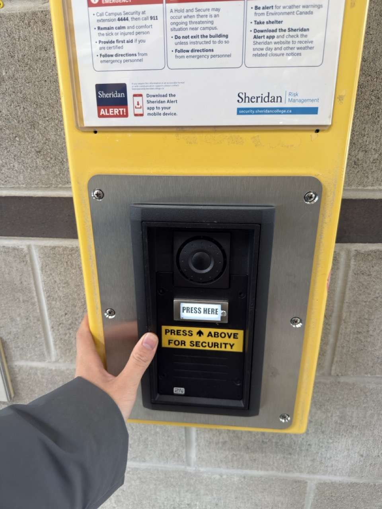
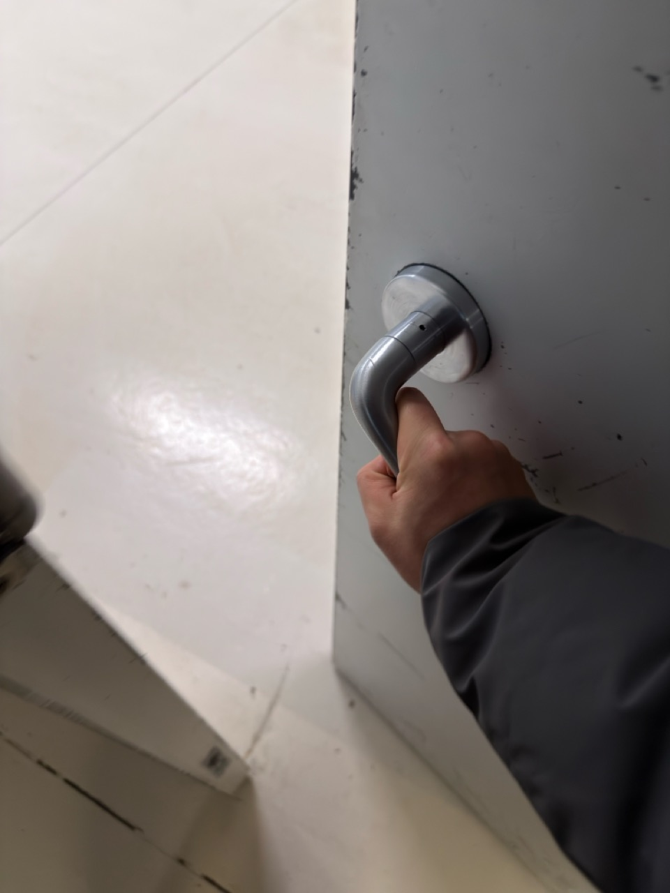
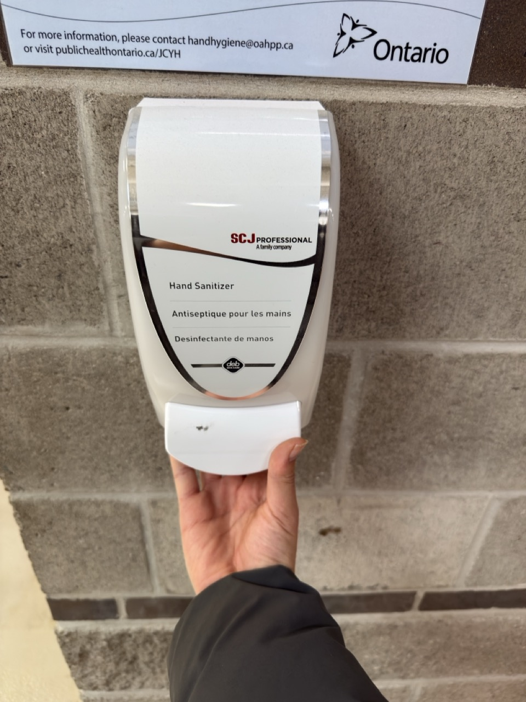
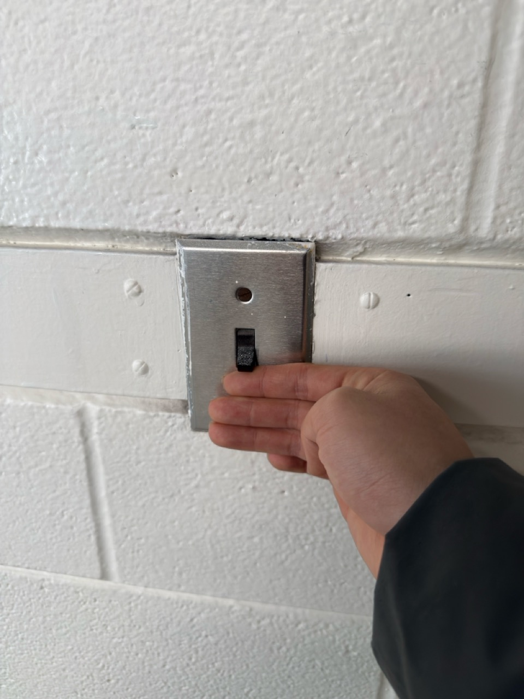
Three tools link touch, sound and screen三种工具把触摸、声音和屏幕连起来三種工具把觸摸、聲音和螢幕連起來3 つの道具が、タッチと音と画面をつなぐTrois outils relient toucher, son et écranDrei Werkzeuge verbinden Berührung, Klang und Bildschirm
- p5.js and p5.soundp5.js 和 p5.soundp5.js 和 p5.soundp5.js と p5.soundp5.js et p5.soundp5.js und p5.soundA JavaScript library for interactive sketches. Its sound library captures audio, and Fast Fourier Transform (FFT) analysis splits it into frequencies that can drive shapes in real time.用来做交互草图的 JavaScript 库。它的声音库可以采集音频，再用快速傅里叶变换（FFT）把声音拆成不同频率，实时驱动图形。用來做互動草圖的 JavaScript 函式庫。它的聲音函式庫可以擷取音訊，再用快速傅立葉轉換（FFT）把聲音拆成不同頻率，即時驅動圖形。インタラクティブなスケッチのための JavaScript ライブラリ。サウンドライブラリで音を取り込み、高速フーリエ変換（FFT）で周波数に分けて、図形をリアルタイムに動かせる。Une bibliothèque JavaScript pour les sketches interactifs. Sa bibliothèque son capte l’audio, et l’analyse par transformée de Fourier rapide (FFT) le découpe en fréquences qui pilotent des formes en temps réel.Eine JavaScript-Bibliothek für interaktive Sketches. Ihre Sound-Bibliothek nimmt Audio auf, und die schnelle Fourier-Transformation (FFT) zerlegt es in Frequenzen, die Formen in Echtzeit steuern.
- Makey MakeyMakey MakeyMakey MakeyMakey MakeyMakey MakeyMakey MakeyA microcontroller that a computer sees as a keyboard with a few keys. The course used that limit as a constraint: every touch becomes a key press.一种微控制器，电脑会把它当成只有几个键的键盘。课程把这个限制当作设计约束：每一次触摸都变成一次按键。一種微控制器，電腦會把它當成只有幾個鍵的鍵盤。課程把這個限制當作設計約束：每一次觸摸都變成一次按鍵。パソコンからは、いくつかのキーだけのキーボードに見えるマイコン。授業はこの制限を制約として生かし、触れるたびにキー入力になるようにした。Un microcontrôleur que l’ordinateur voit comme un clavier à quelques touches. Le cours a fait de cette limite une contrainte : chaque contact devient une frappe de touche.Ein Mikrocontroller, den der Computer als Tastatur mit wenigen Tasten erkennt. Der Kurs nutzte diese Grenze als Vorgabe: Jede Berührung wird zum Tastendruck.
- Capacitive touch sensor电容式触摸传感器電容式觸控感測器静電容量式タッチセンサーCapteur tactile capacitifKapazitiver Touch-SensorA 5-key board built on the AT42QT1070 chip senses a bare fingertip. Players touch a pad directly and no longer hold a ground wire, which removes friction.基于 AT42QT1070 芯片的 5 键传感板，能直接感应裸露的指尖。玩的人直接摸垫子，不用再握着接地线，交互的阻力就少了。基於 AT42QT1070 晶片的 5 鍵感測板，能直接感應裸露的指尖。玩的人直接摸墊子，不用再握著接地線，互動的阻力就少了。AT42QT1070 チップを使った 5 キーのボードで、素手の指先を直接感知する。演奏する人はパッドに触れるだけでよく、アース線を握る必要がなくなるので、ひっかかりが減る。Une carte à 5 touches basée sur la puce AT42QT1070 détecte directement le bout du doigt. On touche le pad sans tenir de fil de masse, ce qui supprime une friction.Ein 5-Tasten-Board mit dem Chip AT42QT1070 erkennt die bloße Fingerspitze. Man berührt das Pad direkt und muss kein Erdungskabel mehr halten, das nimmt Reibung aus der Interaktion.
Three findings set the direction三个发现定下了方向三個發現定下了方向3 つの発見が方向を決めたTrois constats ont fixé la directionDrei Erkenntnisse gaben die Richtung vor
- The best switch is an action people already make最好的开关，是人本来就会做的动作最好的開關，是人本來就會做的動作いちばんよいスイッチは、人がもともとする動作Le meilleur interrupteur est un geste que l’on fait déjàDer beste Schalter ist eine Handlung, die Menschen ohnehin ausführenFastening a buckle or setting down a phone needs no learning, so the circuit closes on that action.扣上卡扣、放下手机都不用学，所以让电路在这个动作上接通。扣上卡扣、放下手機都不用學，所以讓電路在這個動作上接通。バックルを留める、スマホを置くといった動作は覚える必要がないので、その動作で回路が閉じるようにする。Attacher une boucle ou poser un téléphone ne s’apprend pas : le circuit se ferme donc sur ce geste.Eine Schnalle schließen oder ein Handy abstellen muss niemand lernen, also schließt der Stromkreis bei genau dieser Handlung.
- Feedback has to arrive in real time反馈必须实时出现回饋必須即時出現フィードバックはリアルタイムで返すLe retour doit arriver en temps réelFeedback muss in Echtzeit kommenWhen visuals lag behind sound or touch, the link between them weakens, so timing is tested as closely as the look.画面一旦跟不上声音或触摸，两者的联系就会变弱，所以时延和外观要一样仔细地测试。畫面一旦跟不上聲音或觸摸，兩者的連結就會變弱，所以延遲和外觀要一樣仔細地測試。映像が音やタッチに遅れると両者のつながりが弱まるので、見た目と同じくらい丁寧にタイミングをテストする。Quand l’image traîne derrière le son ou le toucher, le lien s’affaiblit : le temps de réponse se teste aussi soigneusement que l’aspect.Hinken die Bilder Klang oder Berührung hinterher, wird die Verbindung schwächer, also wird Timing so genau getestet wie das Aussehen.
- Pure touch removes friction纯触摸减少阻力純觸摸減少阻力純粋なタッチがひっかかりを減らすLe toucher pur supprime les frictionsReine Berührung nimmt ReibungA capacitive sensor lets people play with a bare fingertip, which suits a drum that should feel immediate.电容式传感器让人用裸露的指尖就能演奏，正适合一台应该一碰就响的鼓。電容式感測器讓人用裸露的指尖就能演奏，正適合一台應該一碰就響的鼓。静電容量式センサーなら素手の指先で演奏でき、触れた瞬間に鳴るべきドラムに合う。Un capteur capacitif permet de jouer du bout du doigt, ce qui convient à une batterie qui doit répondre aussitôt.Ein kapazitiver Sensor erlaubt das Spielen mit bloßer Fingerspitze, passend für ein Drumkit, das sich unmittelbar anfühlen soll.
Process过程過程プロセスDémarcheProzess
Each module ran as fast sprints of about 25 versions per activity, then one final design. Tests on materials and timing decided what survived.
每个模块都以快速冲刺推进：每个活动做约 25 个版本，最后收成一个最终设计。材料和时延的测试决定了哪些想法留下来。
每個模組都以快速衝刺推進：每個活動做約 25 個版本，最後收成一個最終設計。材料和延遲的測試決定了哪些想法留下來。
各モジュールは短いスプリントで進め、アクティビティごとに約 25 の案をつくってから、最終デザインをひとつにまとめました。どの案を残すかは、素材とタイミングのテストで決まりました。
Chaque module a avancé par sprints rapides, environ 25 versions par activité, puis un design final. Les tests sur les matériaux et le temps de réponse ont décidé de ce qui restait.
Jedes Modul lief in schnellen Sprints mit rund 25 Versionen pro Aktivität, danach folgte ein finales Design. Tests zu Material und Timing entschieden, was blieb.
The method: formstorming, 25 fast versions before any judgement方法：形态风暴，先快速做出 25 个版本，再做判断方法：形態風暴，先快速做出 25 個版本，再做判斷方法：フォームストーミング。判断の前に、25 の案を素早くつくるLa méthode : le formstorming, 25 versions rapides avant tout jugementDie Methode: Formstorming, 25 schnelle Versionen vor jedem Urteil
All three modules used formstorming: generate as many variations as possible in short, high-energy sprints, and judge only once there are many to compare. Each weekly activity produced 25 iterations, indexed in a 5 by 5 grid so patterns could be read across the whole set. The strongest ideas then became the final design of the module.
三个模块都用了形态风暴：在短促、高强度的冲刺里尽量多地生成变体，等有了足够多的对比对象再做判断。每周的活动产出 25 个迭代，排进 5 × 5 的网格里，好从整组里读出规律。最有力的想法再发展成这个模块的最终设计。
三個模組都用了形態風暴：在短促、高強度的衝刺裡盡量多地生成變體，等有了足夠多的對比對象再做判斷。每週的活動產出 25 個迭代，排進 5 × 5 的網格裡，好從整組裡讀出規律。最有力的想法再發展成這個模組的最終設計。
3 つのモジュールはどれもフォームストーミングで進めました。短く集中したスプリントでできるだけ多くのバリエーションを生み、比べられるだけの数がそろってから判断します。毎週のアクティビティで 25 の案をつくり、5 × 5 のグリッドに並べて全体からパターンを読み取りました。いちばん力のある案が、そのモジュールの最終デザインになりました。
Les trois modules ont utilisé le formstorming : produire un maximum de variantes en sprints courts et intenses, et ne juger qu’une fois qu’il y en a beaucoup à comparer. Chaque activité hebdomadaire a donné 25 itérations, classées dans une grille de 5 sur 5 pour lire des motifs dans l’ensemble. Les idées les plus fortes sont ensuite devenues le design final du module.
Alle drei Module nutzten Formstorming: in kurzen, intensiven Sprints möglichst viele Varianten erzeugen und erst urteilen, wenn genug zum Vergleichen da ist. Jede Wochenaktivität ergab 25 Iterationen, angeordnet in einem 5-mal-5-Raster, damit sich Muster über das ganze Set ablesen ließen. Die stärksten Ideen wurden dann zum finalen Entwurf des Moduls.
Module 1: copper tape circuits came first, with trial and error on every joint模块 1：先做铜箔胶带电路，每个接点都要反复试模組 1：先做銅箔膠帶電路，每個接點都要反覆試モジュール 1：まず銅テープで回路をつくり、接点ごとに試行錯誤したModule 1 : d’abord des circuits en ruban de cuivre, chaque jonction testée à tâtonsModul 1: zuerst Schaltungen aus Kupferband, jede Verbindung durch Ausprobieren
The first activity built small circuits from copper tape, LED stickers and coin batteries, with conductive thread and fabric tried along the way: a heart, a house with a lit window, a Christmas tree, a print pod that lights up. Getting every joint to connect took repeated attempts. Copper tape stuck poorly to flexible surfaces and lost conductivity over time, so materials were compared and connections reinforced.
第一个活动用铜箔胶带、LED 贴片和纽扣电池搭小电路，中间也试了导电线和导电布：一颗心、一扇亮着的窗、一棵圣诞树、一个会亮的打印舱。每个接点都要试好几次才能接通。铜箔胶带在柔软的表面上粘不牢，时间一长导电性也会变差，所以对比了不同材料，并加固了连接。
第一個活動用銅箔膠帶、LED 貼片和鈕扣電池搭小電路，中間也試了導電線和導電布：一顆心、一扇亮著的窗、一棵聖誕樹、一個會亮的列印艙。每個接點都要試好幾次才能接通。銅箔膠帶在柔軟的表面上黏不牢，時間一長導電性也會變差，所以比較了不同材料，並加固了連接。
最初のアクティビティでは、銅テープ、LED ステッカー、コイン電池で小さな回路をつくり、途中で導電糸や導電布も試しました。ハート、窓が光る家、クリスマスツリー、光るプリントポッドなどです。接点をつなぐには何度も試す必要がありました。銅テープは柔らかい面にうまく貼りつかず、時間とともに導電性も落ちたので、素材を比べ、接続を補強しました。
La première activité a construit de petits circuits en ruban de cuivre, LED autocollantes et piles bouton, en testant au passage fil et tissu conducteurs : un cœur, une maison à la fenêtre éclairée, un sapin de Noël, une cabine d’impression qui s’allume. Chaque jonction a demandé plusieurs essais. Le ruban de cuivre adhérait mal aux surfaces souples et perdait sa conductivité avec le temps : les matériaux ont été comparés et les connexions renforcées.
Die erste Aktivität baute kleine Schaltungen aus Kupferband, LED-Stickern und Knopfzellen und probierte nebenbei leitfähigen Faden und Stoff aus: ein Herz, ein Haus mit leuchtendem Fenster, ein Weihnachtsbaum, eine Druckkabine, die aufleuchtet. Jede Verbindung brauchte mehrere Versuche. Kupferband haftete schlecht auf flexiblen Flächen und verlor mit der Zeit Leitfähigkeit, also wurden Materialien verglichen und Verbindungen verstärkt.
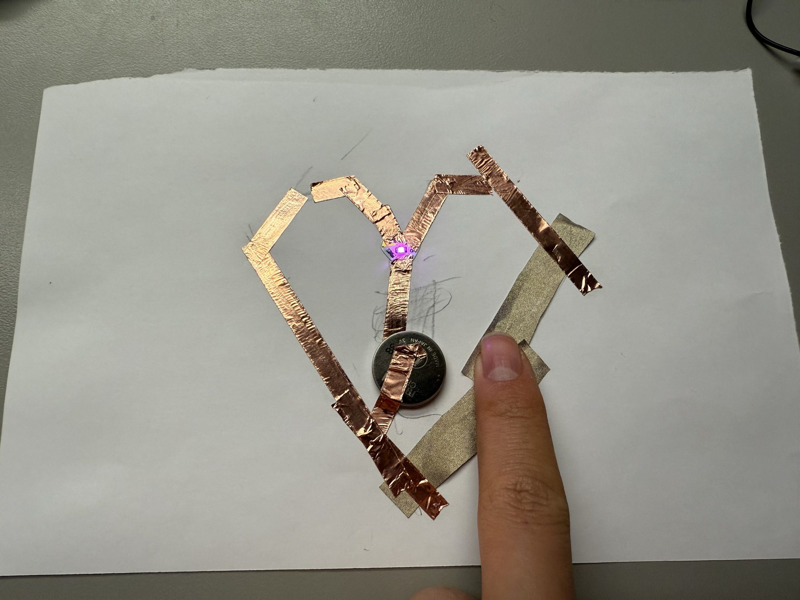
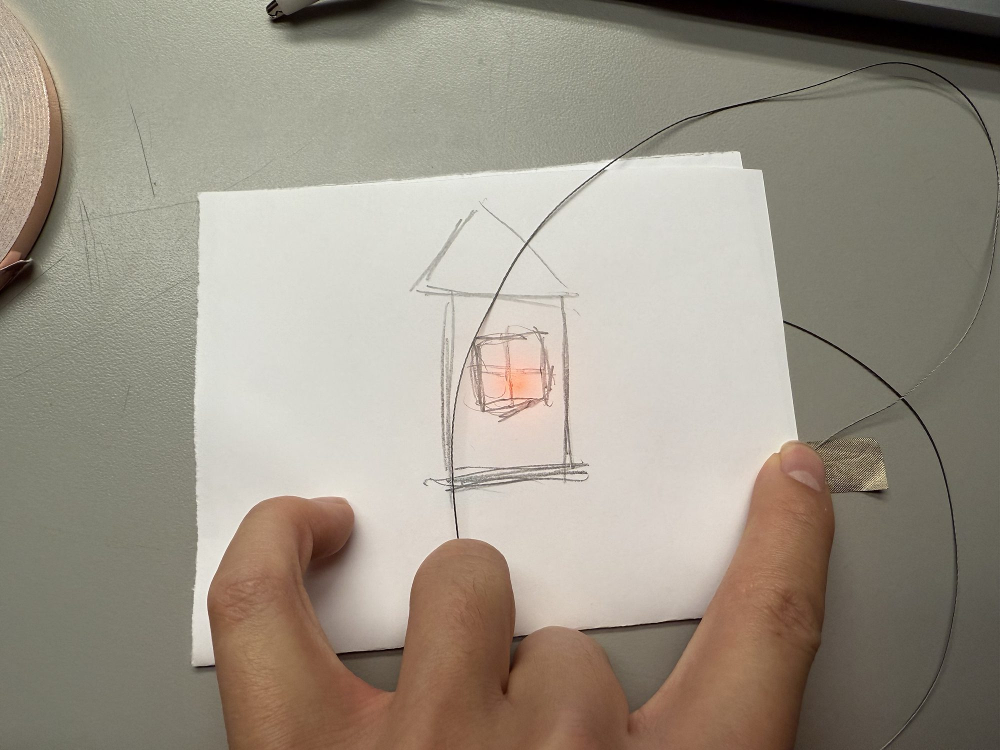
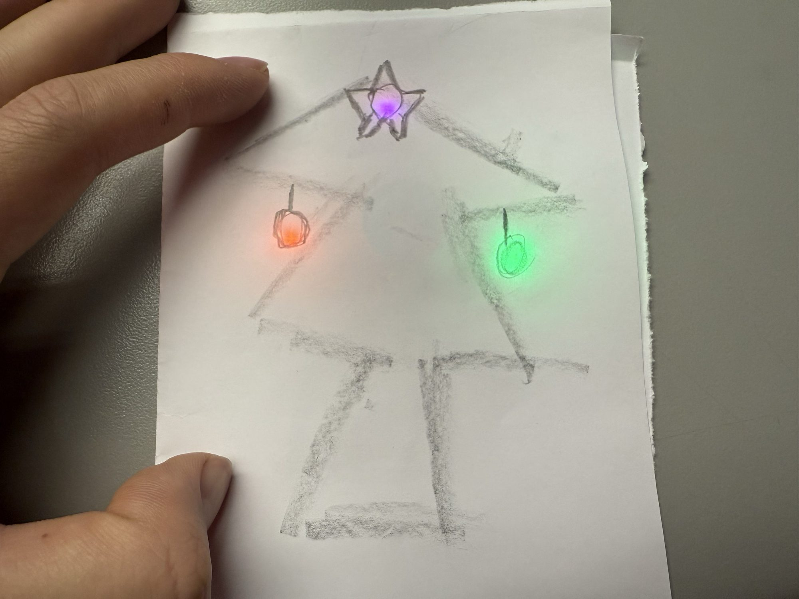
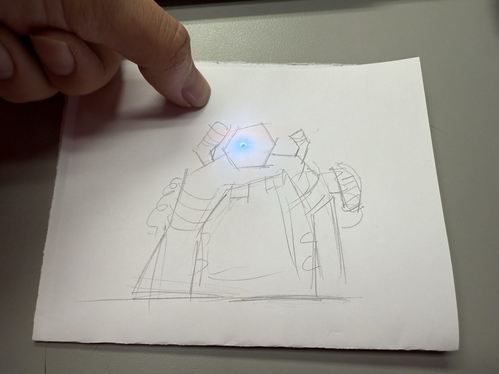
Sketches turned everyday actions into switches, and a glove proved the idea草图把日常动作变成开关，一只手套验证了这个想法草圖把日常動作變成開關，一隻手套驗證了這個想法スケッチで日常の動作をスイッチに変え、グローブで発想を確かめたDes croquis ont fait des gestes quotidiens des interrupteurs, et un gant a validé l’idéeSkizzen machten Alltagshandlungen zu Schaltern, ein Handschuh bewies die Idee
The affordance study fed a set of sketches: a helmet whose buckle closes the circuit, a glove whose zipper turns on its lights, and a phone holder that reacts when a phone is placed on it. The glove was built as a working prototype, with conductive wires and LEDs visible through a transparent outer layer. Pulling up the zipper closes a small circuit and the lights come on, keeping a cyclist visible in low light.
示能观察催生了一组草图：卡扣能接通电路的头盔、拉上拉链就亮灯的手套、放上手机就有反应的手机支架。手套被做成了可用的原型，导电线和 LED 透过透明外层清晰可见。拉上拉链就接通一个小电路，灯随之亮起，让骑车的人在昏暗中也能被看见。
示能觀察催生了一組草圖：卡扣能接通電路的安全帽、拉上拉鍊就亮燈的手套、放上手機就有反應的手機支架。手套被做成了可用的原型，導電線和 LED 透過透明外層清晰可見。拉上拉鍊就接通一個小電路，燈隨之亮起，讓騎車的人在昏暗中也能被看見。
アフォーダンスの調査から、いくつものスケッチが生まれました。バックルで回路が閉じるヘルメット、ファスナーでライトが点くグローブ、スマートフォンを置くと反応するスタンドです。グローブは動くプロトタイプとして制作し、導電線と LED が透明な外層越しに見えます。ファスナーを上げると小さな回路が閉じてライトが点き、暗い中でも自転車乗りが見えるようになります。
L’étude des affordances a nourri une série de croquis : un casque dont la boucle ferme le circuit, un gant dont la fermeture éclair allume des lumières, un support qui réagit quand on y pose un téléphone. Le gant a été construit en prototype fonctionnel, fils conducteurs et LED visibles sous une couche extérieure transparente. Remonter la fermeture ferme un petit circuit et allume les lumières, ce qui garde le cycliste visible par faible luminosité.
Die Affordanz-Studie speiste eine Reihe von Skizzen: ein Helm, dessen Schnalle den Stromkreis schließt, ein Handschuh, dessen Reißverschluss Lichter einschaltet, und ein Halter, der reagiert, wenn ein Handy darauf liegt. Der Handschuh wurde als funktionierender Prototyp gebaut, mit leitfähigen Drähten und LEDs, die durch eine transparente Außenschicht sichtbar sind. Wer den Reißverschluss hochzieht, schließt einen kleinen Stromkreis, die Lichter gehen an und halten Radfahrende bei wenig Licht sichtbar.

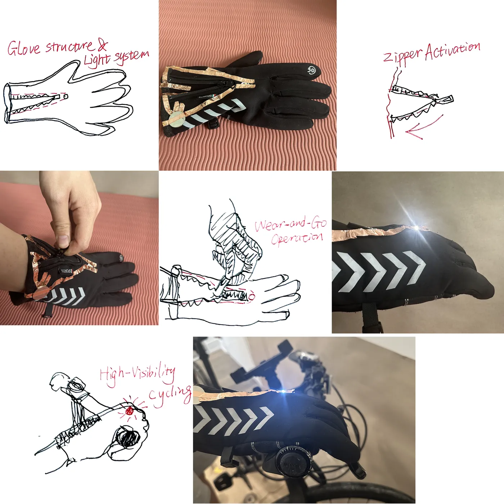
The helmet and phone holder were refined for durability and a clean look头盔和手机支架在耐用性和外观上反复打磨安全帽和手機支架在耐用性和外觀上反覆打磨ヘルメットとスマホスタンドは、耐久性とすっきりした見た目のために手を加えたLe casque et le support de téléphone ont été affinés pour durer et rester sobresHelm und Handyhalter wurden auf Haltbarkeit und klares Aussehen hin verfeinert
The helmet circuit had to survive the flexing of a helmet in use, so wire placement was rethought and connections reinforced. Hiding wires without spoiling the design took trial and error, and the buckle switch needed careful tuning of sensitivity and of where the conductive parts sit. The phone holder was sketched as a sequence of states: the phone lies flat on the desk in standby, placing it triggers the ready state, and a red light in peripheral vision becomes a quiet reminder of screen time.
头盔电路要经得住使用中的弯折，所以重新安排了走线并加固了连接。既要藏好电线又不破坏设计，花了不少试错；卡扣开关的灵敏度和导电部件的位置也要细心调整。手机支架用一组状态来构思：手机平放在桌上时处于待机；放进支架就进入就绪状态；视野边缘的一盏红灯，悄悄提醒屏幕使用的时长。
安全帽電路要經得住使用中的彎折，所以重新安排了走線並加固了連接。既要藏好電線又不破壞設計，花了不少試錯；卡扣開關的靈敏度和導電部件的位置也要細心調整。手機支架用一組狀態來構思：手機平放在桌上時處於待機；放進支架就進入就緒狀態；視野邊緣的一盞紅燈，悄悄提醒螢幕使用的時長。
ヘルメットの回路は使用中のたわみに耐える必要があり、配線の位置を見直し、接続を補強しました。デザインを損なわずに配線を隠すには試行錯誤が必要で、バックルのスイッチは感度と導電部の位置を丁寧に調整しました。スマホスタンドは状態の流れとして描きました。机に平置きされたスマートフォンは待機、スタンドに置くと準備完了になり、視界の端の赤いライトが画面を見ている時間を静かに知らせます。
Le circuit du casque devait résister aux flexions de l’usage : le placement des fils a été repensé et les connexions renforcées. Cacher les fils sans abîmer le design a demandé des essais, et l’interrupteur de la boucle a exigé un réglage précis de la sensibilité et de la position des parties conductrices. Le support de téléphone a été dessiné comme une suite d’états : le téléphone posé à plat sur le bureau est en veille, le placer déclenche l’état prêt, et une lumière rouge en vision périphérique rappelle discrètement le temps d’écran.
Die Helmschaltung musste das Biegen im Gebrauch aushalten, also wurde die Leitungsführung neu gedacht und Verbindungen verstärkt. Drähte zu verstecken, ohne das Design zu stören, brauchte Versuche, und der Schnallenschalter verlangte genaues Einstellen der Empfindlichkeit und der Lage der leitfähigen Teile. Der Handyhalter wurde als Folge von Zuständen skizziert: Liegt das Handy flach auf dem Tisch, ist er im Standby, das Einlegen löst den Bereitschaftszustand aus, und ein rotes Licht im Augenwinkel erinnert leise an die Bildschirmzeit.
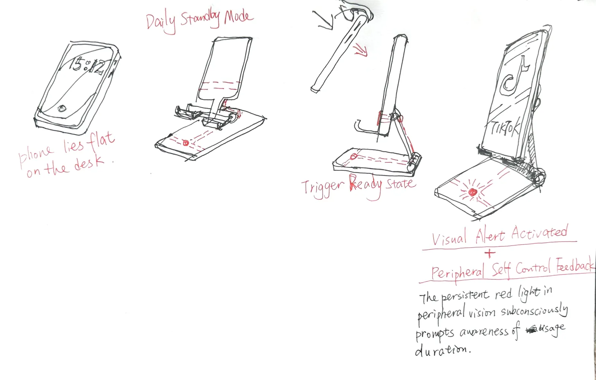
Module 2: 25 recordings became a personal sound library模块 2：25 段录音组成了一个个人声音库模組 2：25 段錄音組成了一個個人聲音庫モジュール 2：25 の録音が、自分だけのサウンドライブラリになったModule 2 : 25 enregistrements ont formé une sonothèque personnelleModul 2: 25 Aufnahmen wurden zu einer eigenen Klangbibliothek
The second module began by listening. Twenty-five sounds were recorded and cleaned up so they could be reused in later projects: ambient, environmental, synthesized and recorded audio, from a bicycle chain and a subway pulling in to synth sequences, boiling water and fries in hot oil.
第二个模块从聆听开始。录下 25 段声音并做了整理，方便之后的项目继续使用：氛围声、环境声、合成音和实录音频，从自行车链条、地铁进站，到合成器音序、烧开水和炸薯条。
第二個模組從聆聽開始。錄下 25 段聲音並做了整理，方便之後的專案繼續使用：氛圍聲、環境聲、合成音和實錄音訊，從腳踏車鏈條、地鐵進站，到合成器音序、燒開水和炸薯條。
2 つめのモジュールは聴くことから始まりました。あとのプロジェクトでも使えるよう、25 の音を録音して整えました。アンビエント、環境音、シンセサイザー、録音素材で、自転車のチェーンや地下鉄の到着から、シンセのシーケンス、お湯が沸く音、ポテトを揚げる音まであります。
Le deuxième module a commencé par l’écoute. Vingt-cinq sons ont été enregistrés et nettoyés pour servir dans les projets suivants : ambiances, sons d’environnement, sons synthétiques et enregistrés, d’une chaîne de vélo et d’un métro qui entre en station à des séquences de synthé, de l’eau qui bout et des frites dans l’huile.
Das zweite Modul begann mit Zuhören. Fünfundzwanzig Klänge wurden aufgenommen und bereinigt, damit sie in späteren Projekten nutzbar sind: Ambient, Umgebungsgeräusche, Synthesizer und Aufnahmen, von einer Fahrradkette und einer einfahrenden U-Bahn bis zu Synth-Sequenzen, kochendem Wasser und Pommes im heißen Öl.
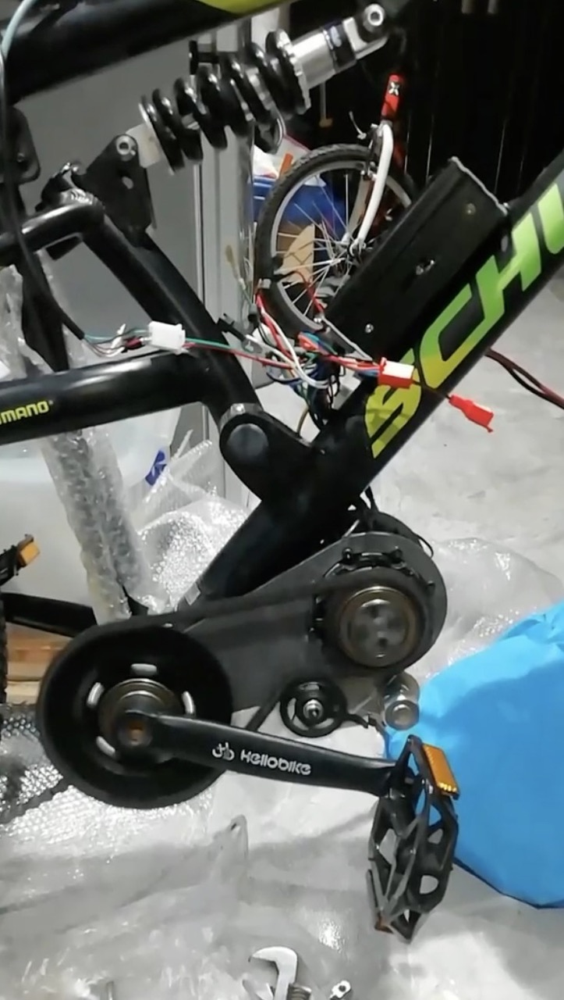
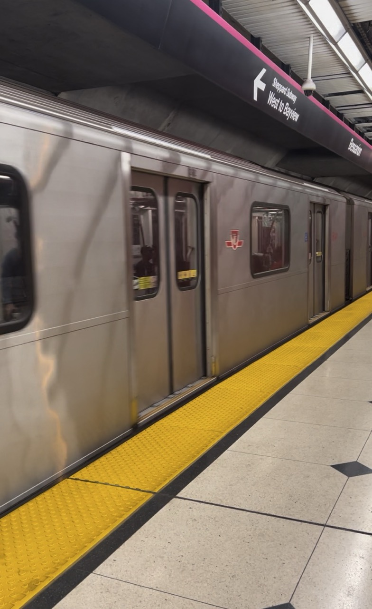
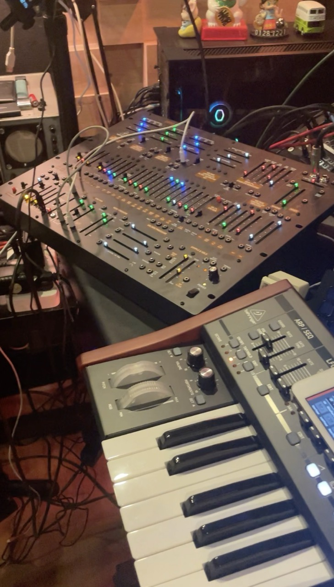
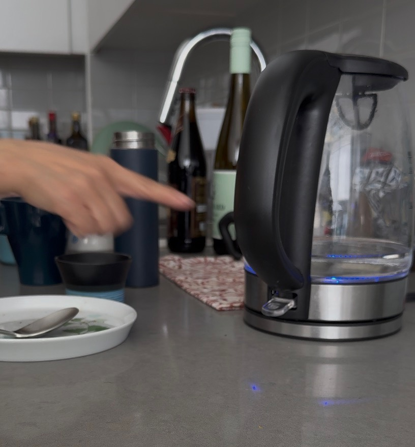
25 sketches tested how sound can drive form, and six were taken further25 个草图测试声音怎样驱动形态，其中 6 个继续深化25 個草圖測試聲音怎樣驅動形態，其中 6 個繼續深化25 のスケッチで音が形を動かす方法を試し、6 つをさらに発展させた25 sketches ont testé comment le son peut piloter la forme, et six ont été poussés plus loin25 Sketches testeten, wie Klang Form steuern kann, sechs wurden weiterentwickelt
Each p5.js sketch mapped amplitude or frequency to a visual: waveforms, particle systems, 3D shapes, spectrum analyzers, radial equalizers. Six became iterations toward the header. The hardest problem was keeping the visuals in sync with the sound in real time, solved by fine-tuning frame rates and sensitivity settings.
每个 p5.js 草图都把振幅或频率映射成一种视觉：波形、粒子系统、3D 形体、频谱分析器、环形均衡器。其中 6 个成为通向头图的迭代。最难的是让画面和声音实时同步，最后靠细调帧率和灵敏度设置解决。
每個 p5.js 草圖都把振幅或頻率對應成一種視覺：波形、粒子系統、3D 形體、頻譜分析器、環形等化器。其中 6 個成為通向頁首的迭代。最難的是讓畫面和聲音即時同步，最後靠細調影格率和靈敏度設定解決。
どの p5.js スケッチも、振幅や周波数を映像に対応させています。波形、パーティクルシステム、3D の形、スペクトラムアナライザー、円形のイコライザーなどです。そのうち 6 つを、ヘッダーに向けたイテレーションとして発展させました。いちばんの難所は映像を音とリアルタイムで同期させることで、フレームレートと感度の設定を細かく調整して解決しました。
Chaque sketch p5.js traduit l’amplitude ou la fréquence en image : formes d’onde, systèmes de particules, formes 3D, analyseurs de spectre, égaliseurs circulaires. Six sont devenus des itérations vers l’en-tête. Le plus difficile était de garder l’image synchronisée avec le son en temps réel, réglé en affinant la fréquence d’images et la sensibilité.
Jeder p5.js-Sketch übersetzte Amplitude oder Frequenz in ein Bild: Wellenformen, Partikelsysteme, 3D-Formen, Spektralanalysatoren, radiale Equalizer. Sechs wurden zu Iterationen in Richtung Header. Am schwierigsten war es, Bild und Klang in Echtzeit synchron zu halten, gelöst durch feines Abstimmen von Bildrate und Empfindlichkeit.
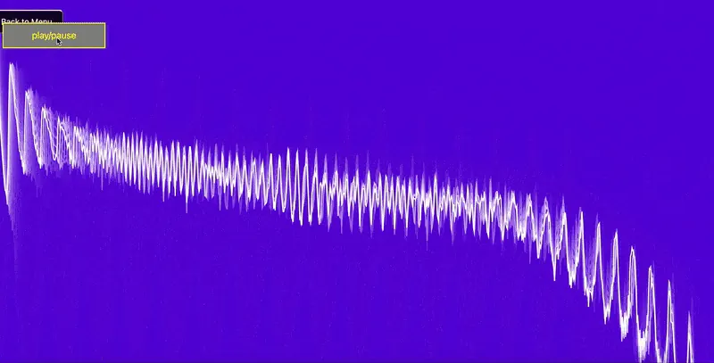
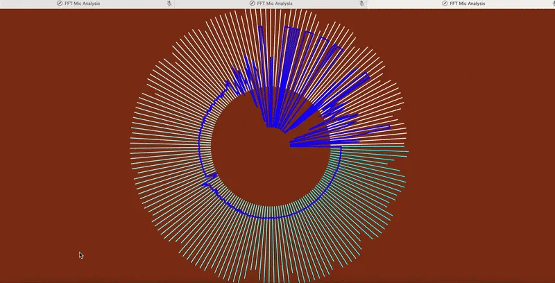
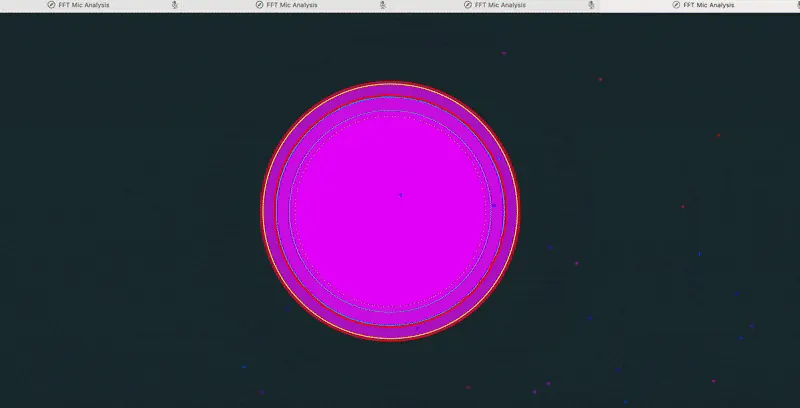
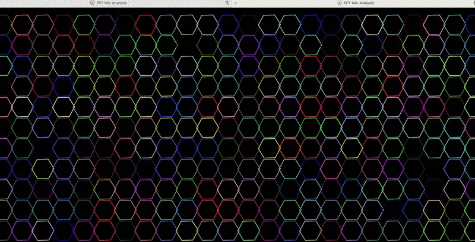
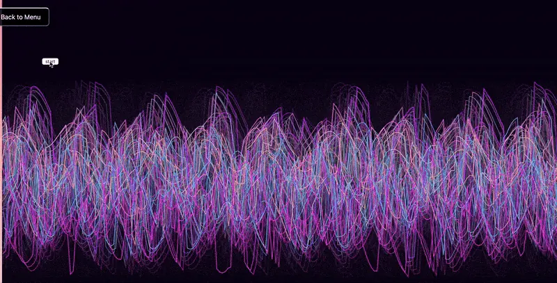
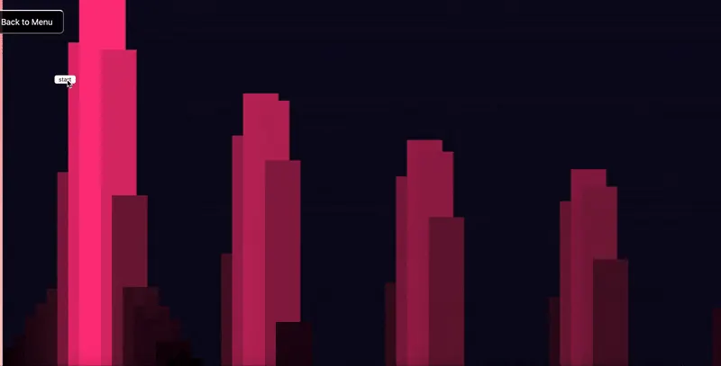
Module 3: two rounds of Makey Makey experiments explored what touch can trigger模块 3：两轮 Makey Makey 实验，探索触摸能触发什么模組 3：兩輪 Makey Makey 實驗，探索觸摸能觸發什麼モジュール 3：2 回にわたる Makey Makey の実験で、タッチが何を起こせるかを探ったModule 3 : deux séries d’expériences Makey Makey ont exploré ce que le toucher peut déclencherModul 3: zwei Runden Makey-Makey-Experimente erkundeten, was Berührung auslösen kann
Two activities of quick experiments connected keyboard and Makey Makey input to p5.js: bouncing shapes, soundboards, rotating 3D cubes, particle systems with gravity and small reaction games. In the second round, copper tape on paper and card became the touch surface, wired by clips to the Makey Makey.
两个活动里的快速实验，把键盘和 Makey Makey 的输入接到 p5.js 上：弹跳的形状、音效板、旋转的 3D 立方体、带重力的粒子系统，还有小小的反应游戏。第二轮里，贴在纸和卡纸上的铜箔胶带成了触摸面，用夹子线接到 Makey Makey。
兩個活動裡的快速實驗，把鍵盤和 Makey Makey 的輸入接到 p5.js 上：彈跳的形狀、音效板、旋轉的 3D 立方體、帶重力的粒子系統，還有小小的反應遊戲。第二輪裡，貼在紙和卡紙上的銅箔膠帶成了觸摸面，用夾子線接到 Makey Makey。
2 つのアクティビティで、キーボードと Makey Makey の入力を p5.js につなぐ実験を素早く重ねました。跳ねる図形、サウンドボード、回転する 3D キューブ、重力のあるパーティクルシステム、小さな反射神経ゲームなどです。2 回目では、紙や厚紙に貼った銅テープをタッチ面にし、クリップ付きの線で Makey Makey につなぎました。
Deux activités d’expériences rapides ont relié le clavier et le Makey Makey à p5.js : formes rebondissantes, tables de sons, cubes 3D en rotation, systèmes de particules avec gravité et petits jeux de réflexes. Lors de la deuxième série, du ruban de cuivre sur papier et carton est devenu la surface tactile, reliée au Makey Makey par des pinces.
Zwei Aktivitäten mit schnellen Experimenten verbanden Tastatur- und Makey-Makey-Eingaben mit p5.js: springende Formen, Soundboards, rotierende 3D-Würfel, Partikelsysteme mit Schwerkraft und kleine Reaktionsspiele. In der zweiten Runde wurde Kupferband auf Papier und Karton zur Touch-Fläche, per Klemmen mit dem Makey Makey verbunden.

Drum kit tests: grounding and pad shape decided whether touch worked鼓机测试：接地和垫子形状决定了触摸灵不灵鼓機測試：接地和墊子形狀決定了觸摸靈不靈ドラムキットのテスト：タッチが効くかどうかは、アースとパッドの形で決まったTests de la batterie : la mise à la terre et la forme des pads décidaient si le toucher marchaitDrumkit-Tests: Erdung und Padform entschieden, ob Berührung funktionierte
The final design moved from the keyboard to five copper pads on a cardboard box, wired through the capacitive sensor to the Makey Makey. Tests showed the sensor is very sensitive to grounding: with an unstable ground, touches were missed. The shape and size of the copper foil also changed how well each pad responded, so many versions were tried before the pads felt right. Sound in p5.js lagged by 10 to 300 milliseconds, which shaped the next step.
最终设计从键盘转到纸盒上的五块铜箔垫，经过电容式传感器接到 Makey Makey。测试发现，传感器对接地非常敏感：接地不稳，触摸就会漏掉。铜箔的形状和大小也会改变每块垫子的灵敏度，所以试了很多版本，垫子的手感才对。p5.js 里的声音有 10 到 300 毫秒的延迟，这也决定了下一步的方向。
最終設計從鍵盤轉到紙盒上的五塊銅箔墊，經過電容式感測器接到 Makey Makey。測試發現，感測器對接地非常敏感：接地不穩，觸摸就會漏掉。銅箔的形狀和大小也會改變每塊墊子的靈敏度，所以試了很多版本，墊子的手感才對。p5.js 裡的聲音有 10 到 300 毫秒的延遲，這也決定了下一步的方向。
最終デザインでは、キーボードから段ボール箱の 5 つの銅箔パッドへ移り、静電容量式センサーを通して Makey Makey につなぎました。テストで、センサーがアースにとても敏感なことが分かりました。アースが不安定だとタッチが取りこぼされます。銅箔の形と大きさでもパッドの反応が変わるため、手応えが合うまで何度も作り直しました。p5.js の音には 10 から 300 ミリ秒の遅れがあり、これが次の一歩を決めました。
Le design final est passé du clavier à cinq pads en cuivre sur une boîte en carton, reliés au Makey Makey via le capteur capacitif. Les tests ont montré que le capteur est très sensible à la mise à la terre : avec une masse instable, des frappes se perdaient. La forme et la taille de la feuille de cuivre changeaient aussi la réponse de chaque pad, d’où de nombreuses versions avant que les pads répondent bien. Le son dans p5.js avait 10 à 300 millisecondes de retard, ce qui a orienté la suite.
Das finale Design wechselte von der Tastatur zu fünf Kupferpads auf einem Pappkarton, über den kapazitiven Sensor mit dem Makey Makey verbunden. Tests zeigten, dass der Sensor sehr empfindlich auf Erdung reagiert: Bei instabiler Erdung gingen Berührungen verloren. Auch Form und Größe der Kupferfolie veränderten, wie gut jedes Pad ansprach, also wurden viele Versionen ausprobiert, bis die Pads stimmten. Der Klang in p5.js kam 10 bis 300 Millisekunden verzögert, was den nächsten Schritt prägte.
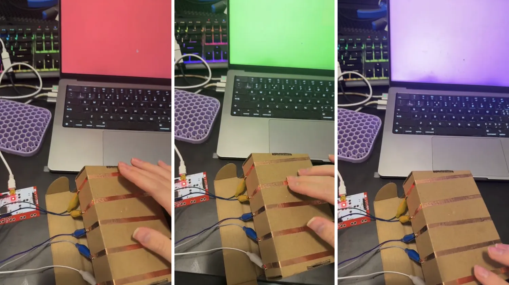
Outcome成果成果成果RésultatErgebnis
The result is a working touch drum kit: five copper pads on a cardboard box that play drum sounds and 3D visuals in the browser. Three earlier designs from the course stand beside it.
最终成果是一台可以演奏的触摸鼓机：纸盒上的五个铜箔垫，在浏览器里触发鼓声和 3D 视觉。同一门课的另外三个设计也一并展示。
最終成果是一台可以演奏的觸控鼓機：紙盒上的五個銅箔墊，在瀏覽器裡觸發鼓聲和 3D 視覺。同一門課的另外三個設計也一併展示。
成果は実際に演奏できるタッチ式ドラムキットです。段ボール箱の上の 5 つの銅箔パッドが、ブラウザでドラムの音と 3D の映像を鳴らします。同じ授業で生まれたほかの 3 つのデザインも並べています。
Le résultat est une batterie tactile qui fonctionne : cinq pads en cuivre sur une boîte en carton déclenchent des sons de batterie et des visuels 3D dans le navigateur. Trois créations antérieures du cours l’accompagnent.
Das Ergebnis ist ein funktionierendes Touch-Drumkit: fünf Kupferpads auf einem Pappkarton lösen im Browser Drum-Sounds und 3D-Visuals aus. Drei frühere Entwürfe aus dem Kurs stehen daneben.
The drum kit is built from five parts鼓机由五个部分组成鼓機由五個部分組成ドラムキットは 5 つの部分でできているLa batterie se compose de cinq élémentsDas Drumkit besteht aus fünf Teilen
- Cardboard box纸盒紙盒段ボール箱Boîte en cartonPappkartonThe body and playing surface, painted in bands of colour鼓的主体和演奏面，涂成彩色条纹鼓的主體和演奏面，塗成彩色條紋本体であり演奏面。色の帯で塗っているLe corps et la surface de jeu, peints en bandes de couleurKorpus und Spielfläche, in Farbstreifen bemalt
- Five copper pads五块铜箔垫五塊銅箔墊5 つの銅箔パッドCinq pads en cuivreFünf KupferpadsOne pad per drum, tapped like a drum pad每块垫子对应一种鼓，像敲鼓垫一样轻敲每塊墊子對應一種鼓，像敲鼓墊一樣輕敲ドラムごとに 1 つ。ドラムパッドのように叩くUn pad par son, frappé comme un pad de batterieEin Pad pro Drum, getippt wie ein Drum-Pad
- Capacitive touch sensor电容式触摸传感器電容式觸控感測器静電容量式タッチセンサーCapteur tactile capacitifKapazitiver Touch-SensorAn AT42QT1070 board that senses a bare fingertip on each padAT42QT1070 传感板，感应每块垫子上的指尖AT42QT1070 感測板，感應每塊墊子上的指尖各パッドに触れた素手の指先を感知する AT42QT1070 のボードUne carte AT42QT1070 qui détecte le doigt nu sur chaque padEin AT42QT1070-Board, das die bloße Fingerspitze auf jedem Pad erkennt
- Makey MakeyMakey MakeyMakey MakeyMakey MakeyMakey MakeyMakey MakeyTurns each touch into a key press: W, A, S, D or F把每次触摸变成一次按键：W、A、S、D 或 F把每次觸摸變成一次按鍵：W、A、S、D 或 Fタッチを W、A、S、D、F のキー入力に変えるTransforme chaque contact en touche : W, A, S, D ou FMacht jede Berührung zum Tastendruck: W, A, S, D oder F
- p5.js sketchp5.js 草图p5.js 草圖p5.js のスケッチSketch p5.jsp5.js-SketchRuns in the browser, plays the drum sound and draws the WebGL scene在浏览器里运行，播放鼓声并绘制 WebGL 画面在瀏覽器裡執行，播放鼓聲並繪製 WebGL 畫面ブラウザで動き、ドラムの音を鳴らして WebGL の場面を描くTourne dans le navigateur, joue le son et dessine la scène WebGLLäuft im Browser, spielt den Drum-Sound und zeichnet die WebGL-Szene

Each tap travels from a fingertip to sound and colour每一下轻敲，从指尖一路变成声音和颜色每一下輕敲，從指尖一路變成聲音和顏色ひと叩きが、指先から音と色へと伝わっていくChaque frappe va du bout du doigt au son et à la couleurJedes Tippen wandert von der Fingerspitze zu Klang und Farbe
Five pads, five drums, five colours五块垫子，五种鼓，五种颜色五塊墊子，五種鼓，五種顏色5 つのパッド、5 つのドラム、5 つの色Cinq pads, cinq sons, cinq couleursFünf Pads, fünf Drums, fünf Farben
- WKick底鼓大鼓キックGrosse caisseBassdrumRed红紅赤RougeRot
- ASnare军鼓小鼓スネアCaisse claireSnareGreen绿綠緑VertGrün
- SHi-hat踩镲腳踏鈸ハイハットCharlestonHi-HatBlue蓝藍青BleuBlau
- DClap拍手拍手クラップClapClapYellow黄黃黄JauneGelb
- FCrash吊镲碎音鈸クラッシュCrashCrashOrange橙橙オレンジOrangeOrange
Each hit sets the colour of a large sphere at the centre and makes it pulse, while a 3D shape (a sphere, box, torus or cone) bursts out and fades. A rotating ring and a field of stars move in the background.
每一击都会把中央的大球体染成对应的颜色并让它脉动，同时迸出一个 3D 形体（球、立方体、圆环或圆锥），慢慢飘散淡去。背景里有一个旋转的圆环和一片星点。
每一擊都會把中央的大球體染成對應的顏色並讓它脈動，同時迸出一個 3D 形體（球、立方體、圓環或圓錐），慢慢飄散淡去。背景裡有一個旋轉的圓環和一片星點。
叩くたびに、中央の大きな球がその色に変わって脈打ち、3D の形（球、立方体、トーラス、円錐）が飛び出して消えていきます。背景では、回転するリングと星の粒が動いています。
Chaque frappe donne sa couleur à une grande sphère centrale et la fait pulser, tandis qu’une forme 3D (sphère, cube, tore ou cône) jaillit puis s’efface. Un anneau en rotation et un champ d’étoiles bougent à l’arrière-plan.
Jeder Schlag färbt eine große Kugel in der Mitte und lässt sie pulsieren, während eine 3D-Form (Kugel, Würfel, Torus oder Kegel) herausfliegt und verblasst. Ein rotierender Ring und ein Sternenfeld bewegen sich im Hintergrund.
Playing it takes three steps演奏只需三步演奏只需三步演奏は 3 ステップJouer se fait en trois étapesSpielen geht in drei Schritten
- Plug the Makey Makey into a computer and open the drum page in the browser.把 Makey Makey 插到电脑上，在浏览器里打开鼓机页面。把 Makey Makey 插到電腦上，在瀏覽器裡打開鼓機頁面。Makey Makey をパソコンにつなぎ、ブラウザでドラムのページを開く。Brancher le Makey Makey à un ordinateur et ouvrir la page de la batterie dans le navigateur.Den Makey Makey an einen Computer anschließen und die Drum-Seite im Browser öffnen.
- Tap a copper pad. The drum plays and the sphere takes that pad’s colour.轻敲一块铜箔垫。鼓声响起，球体变成这块垫子的颜色。輕敲一塊銅箔墊。鼓聲響起，球體變成這塊墊子的顏色。銅箔パッドを叩く。ドラムが鳴り、球がそのパッドの色になる。Taper sur un pad en cuivre : le son part et la sphère prend la couleur du pad.Auf ein Kupferpad tippen. Die Drum erklingt und die Kugel nimmt die Farbe des Pads an.
- Tap in rhythm to build a beat. Without the kit, the W, A, S, D and F keys play the same drums.按节奏敲，拼出一段节拍。没有鼓机时，用键盘的 W、A、S、D、F 也能弹出同样的鼓声。按節奏敲，拼出一段節拍。沒有鼓機時，用鍵盤的 W、A、S、D、F 也能彈出同樣的鼓聲。リズムに合わせて叩き、ビートを組み立てる。キットがなくても、キーボードの W、A、S、D、F で同じドラムが鳴る。Taper en rythme pour construire un beat. Sans le kit, les touches W, A, S, D et F jouent les mêmes sons.Im Rhythmus tippen und einen Beat bauen. Ohne Kit spielen die Tasten W, A, S, D und F dieselben Drums.
Three earlier designs come from the same course同一门课里还有三个更早的设计同一門課裡還有三個更早的設計同じ授業から、ほかに 3 つのデザインが生まれたTrois créations antérieures viennent du même coursDrei frühere Entwürfe stammen aus demselben Kurs
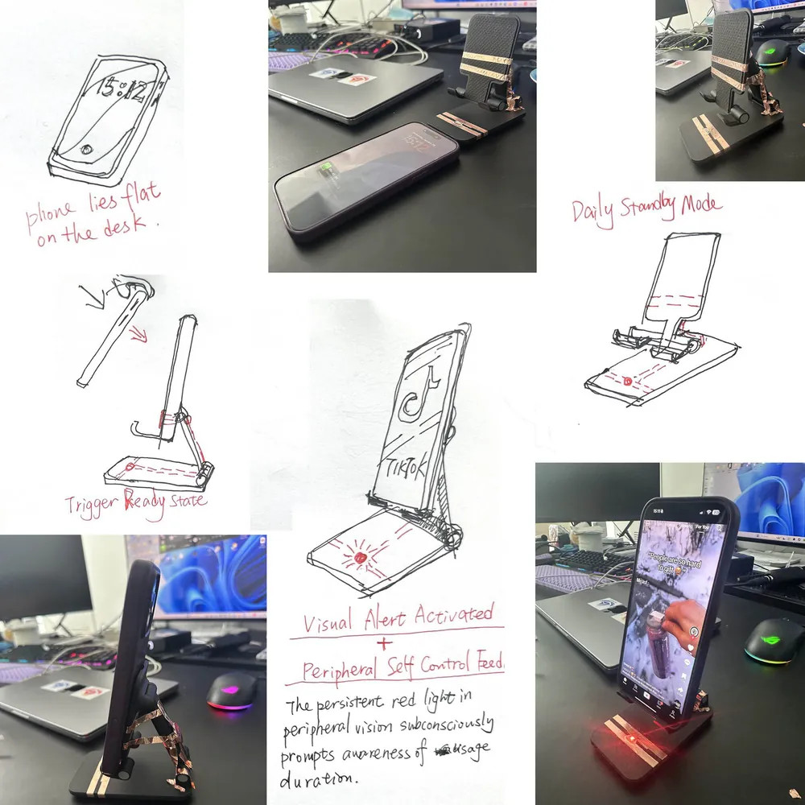
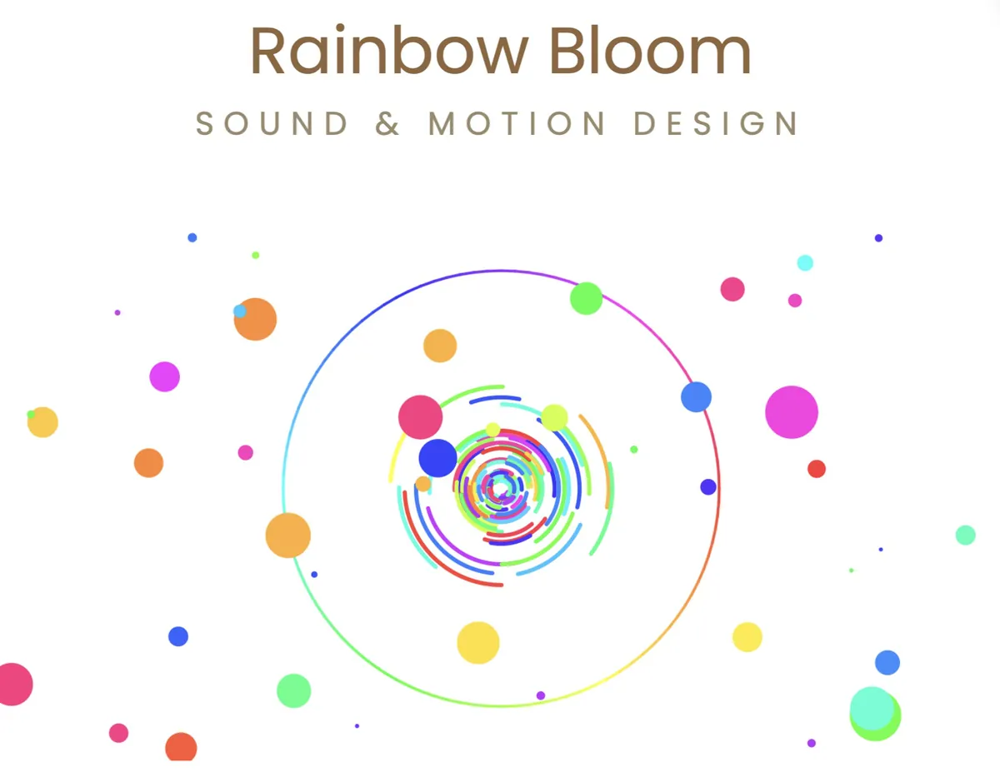
Every module runs live每个模块都可以在线体验每個模組都可以線上體驗どのモジュールも実際に試せるChaque module tourne en ligneJedes Modul läuft live
Open each module’s course page below, or play the drum kit in the browser with the keyboard.
可以在下面打开每个模块的课程页面，或者直接在浏览器里用键盘玩鼓机。
可以在下面打開每個模組的課程頁面，或者直接在瀏覽器裡用鍵盤玩鼓機。
下から各モジュールの授業ページを開くか、ブラウザでキーボードを使ってドラムキットを演奏できます。
Ouvrir ci-dessous la page de cours de chaque module, ou jouer de la batterie au clavier dans le navigateur.
Unten lässt sich die Kursseite jedes Moduls öffnen, oder das Drumkit im Browser mit der Tastatur spielen.
Play the drum kit ↗试玩鼓机 ↗試玩鼓機 ↗ドラムキットを演奏する ↗Jouer de la batterie ↗Das Drumkit spielen ↗
Next: Web MIDI for faster response, and touch strength下一步：用 Web MIDI 加快响应，并加入触摸力度下一步：用 Web MIDI 加快回應，並加入觸摸力度次は、Web MIDI で反応を速くし、タッチの強さを取り入れるProchaine étape : Web MIDI pour répondre plus vite, et la force du toucherAls Nächstes: Web MIDI für schnellere Reaktion, und Anschlagstärke
The 10 to 300 millisecond delay in p5.js sound points to Web MIDI as the next step. The design statement also leaves room for mapping touch strength, adding MIDI output and more instruments, and the Module 1 reflection calls for more user testing to improve durability and usability.
p5.js 声音 10 到 300 毫秒的延迟，让 Web MIDI 成为下一步。设计陈述也为映射触摸力度、加入 MIDI 输出和更多乐器留了空间；模块 1 的反思则提出要做更多用户测试，提升耐用性和可用性。
p5.js 聲音 10 到 300 毫秒的延遲，讓 Web MIDI 成為下一步。設計陳述也為對應觸摸力度、加入 MIDI 輸出和更多樂器留了空間；模組 1 的反思則提出要做更多使用者測試，提升耐用性和可用性。
p5.js の音にある 10 から 300 ミリ秒の遅れから、次は Web MIDI です。デザインステートメントには、タッチの強さの反映、MIDI 出力、楽器の追加の余地も残されており、モジュール 1 の振り返りでは、耐久性と使いやすさを高めるためにユーザーテストを増やすことを挙げています。
Le retard de 10 à 300 millisecondes du son dans p5.js désigne Web MIDI comme prochaine étape. L’énoncé de design laisse aussi la place à la force du toucher, à une sortie MIDI et à d’autres instruments, et le bilan du module 1 appelle davantage de tests utilisateurs pour gagner en solidité et en facilité d’usage.
Die Verzögerung von 10 bis 300 Millisekunden beim Klang in p5.js macht Web MIDI zum nächsten Schritt. Das Design Statement lässt zudem Raum für Anschlagstärke, MIDI-Ausgabe und weitere Instrumente, und die Reflexion zu Modul 1 fordert mehr Nutzertests für Haltbarkeit und Bedienbarkeit.